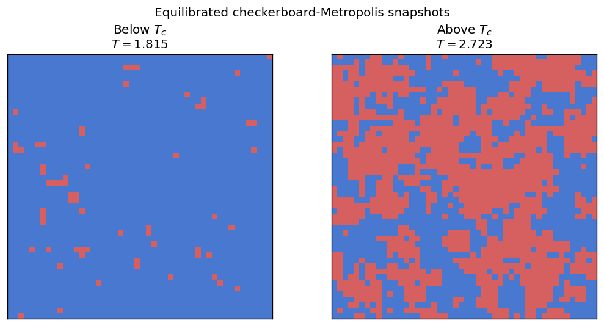
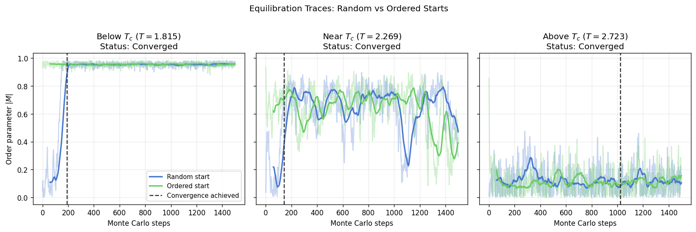
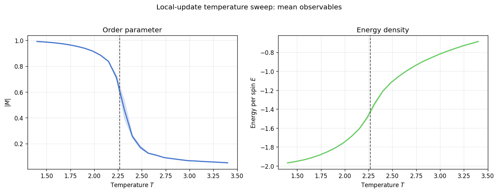
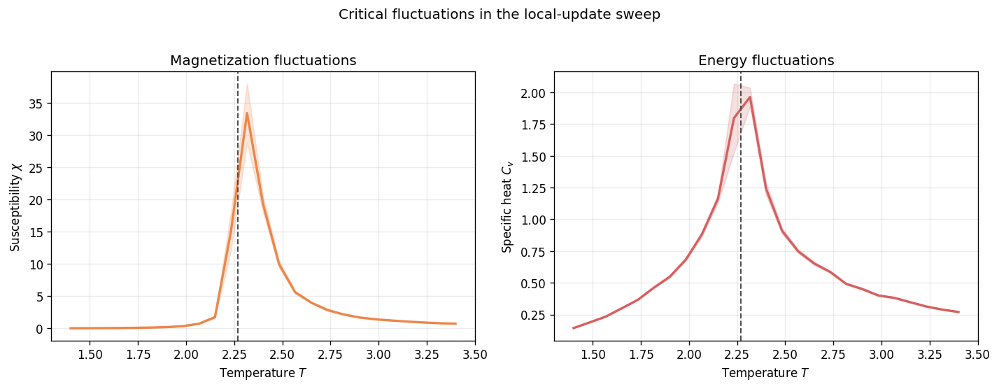
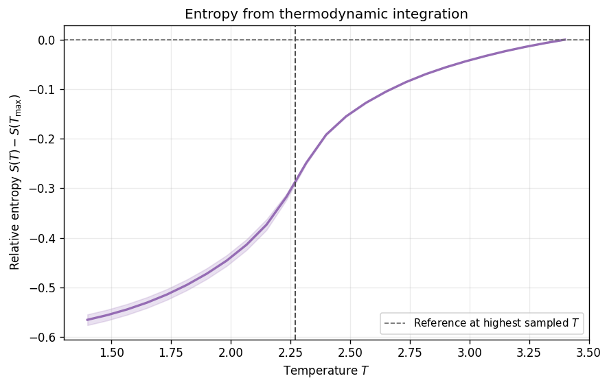
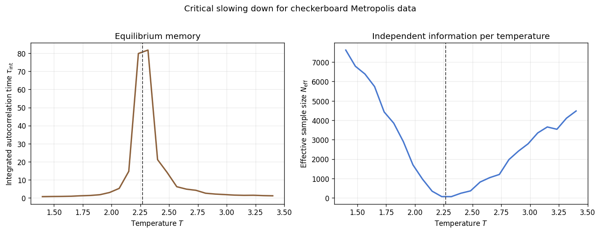
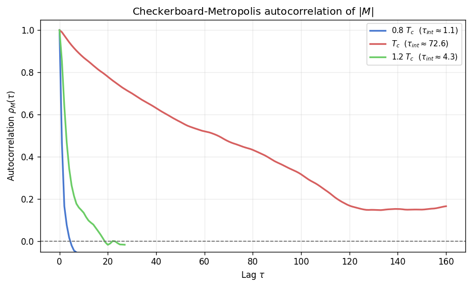

Ising Model: Temperature Sweep and Critical Behavior
The two-dimensional Ising model is the simplest lattice system that still exhibits a genuine thermodynamic phase transition. Each site carries a spin \(s_i \in \{+1,-1\}\) and neighbouring spins interact through \(H = -J \sum_{\langle i,j \rangle} s_i s_j\). At low temperature the ferromagnetic coupling dominates and the lattice orders. At high temperature entropy wins, domains fragment, and the net magnetization disappears. In two dimensions the transition occurs at Onsager’s exact critical temperature \(T_c = 2 / \ln(1 + \sqrt{2}) \approx 2.269\) [1].
This notebook turns the Ising temperature-sweep workflow into a guided analysis. It first shows what ordered and disordered configurations look like, then tracks how the order parameter and the energy vary with temperature. The next sections focus on fluctuation observables, entropy, and the growth of autocorrelation near the transition. Every figure is tied either to the project cache at ../results/ising/temperature_sweep_data.npz or to a lightweight checkerboard-Metropolis fallback that
uses the same observable definitions [2] [3]. The stored outputs in this copy of the notebook come from the fallback (one seed, \(L = 40\)), so the numbers quoted below describe that small run rather than production data.
[1]:
from __future__ import annotations
from pathlib import Path
import matplotlib.colors as mcolors
import matplotlib.pyplot as plt
import numpy as np
from scipy.stats import norm
from models.ising_model import IsingSimulation
from utils.equilibration import (
_detect_quasi_steady_stuck,
estimate_relaxation_time_two_start,
ordered_start_seed,
prepare_equilibrated_simulation,
)
from utils.exceptions import ZeroVarianceAutocorrelationError
from utils.statistics import (
DEFAULT_CONFIDENCE_LEVEL,
calculate_autocorr,
summarize_entropy_observable,
)
from utils.sweep_helpers import ThermoPoint, simulate_thermo_point
TC_ISING = 2.0 / np.log(1.0 + np.sqrt(2.0))
# Data paths are relative to notebooks/, the directory the notebook runs from.
CACHE_PATH = Path('../results/ising/temperature_sweep_data.npz')
PALETTE = {
'mag': '#4878CF',
'eng': '#6ACC65',
'chi': '#EE854A',
'cv': '#D65F5F',
'entropy': '#956CB4',
'tau': '#8C613C',
}
SPIN_CMAP = mcolors.ListedColormap(['#4878CF', '#D65F5F'])
plt.rcParams['figure.dpi'] = 120
print(f'Exact Onsager T_c = {TC_ISING:.6f}')
print(f'Primary sweep path: {CACHE_PATH}')
Exact Onsager T_c = 2.269185
Primary sweep path: ../results/ising/temperature_sweep_data.npz
Ordered and Disordered Configurations
A thermodynamic curve is easier to read when the underlying configurations are visible. The two panels below show equilibrated checkerboard-Metropolis configurations on a \(48 \times 48\) lattice at \(T = 0.8\,T_c \approx 1.82\) and \(T = 1.2\,T_c \approx 2.72\). Below the transition one orientation covers almost the whole lattice, and the minority spins appear as isolated sites or pairs. Above the transition both orientations occupy comparable areas in irregular clusters up to about ten lattice spacings across, the finite correlation length of the disordered phase. The figure is qualitative, but it shows the same change of regime that later appears in the temperature-dependent observables.
[2]:
def _equilibrated_state(*, temp: float, size: int = 48, seed: int = 0) -> np.ndarray:
sim, _ = prepare_equilibrated_simulation(
model_cls=IsingSimulation, model_kwargs={}, size=size, temp=temp,
seed=seed, chunk_size=120, max_steps=6000, detect_stuck=temp < TC_ISING,
)
sim.run(n_steps=200)
return np.array(sim.get_spin_field(), copy=True)
snapshot_temperatures = [0.8 * TC_ISING, 1.2 * TC_ISING]
snapshot_titles = ['Below $T_c$', 'Above $T_c$']
snapshot_states = [
_equilibrated_state(temp=float(temp), seed=200 + idx)
for idx, temp in enumerate(snapshot_temperatures)
]
fig, axes = plt.subplots(1, 2, figsize=(9, 4.5))
for ax, spins, title, temp in zip(axes, snapshot_states, snapshot_titles, snapshot_temperatures, strict=True):
ax.imshow(spins, cmap=SPIN_CMAP, vmin=-1, vmax=1, interpolation='nearest')
ax.set_title(f'{title}\n$T = {temp:.3f}$')
ax.set_xticks([])
ax.set_yticks([])
fig.suptitle('Equilibrated checkerboard-Metropolis snapshots', y=0.98)
fig.tight_layout()
plt.show()

Load or compute sweep data
The notebook first looks for the project cache at ../results/ising/temperature_sweep_data.npz. The path is relative to the notebooks/ directory, from which the notebook runs. If that file contains at least ten temperature points and the required uncertainty fields, the plots are built from it directly. A full cache includes standardized uncertainty fields, effective sample sizes, and autocorrelation metadata.
When the cache is missing or only contains smoke-test points, the notebook falls back to a compact checkerboard-Metropolis calculation. Each temperature point is passed to simulate_thermo_point, the worker used by the production sweep, so the fallback follows the production equilibration and measurement protocol. The worker uses two-start convergence: a random-start and an ordered-start simulation, driven by independent random seeds, evolve side by side, and convergence is declared once
both smoothed magnetization traces satisfy a mutual cross-band criterion over a dwell window. A sigma floor prevents false positives on flat traces. Below \(T_c\) a random start can be stranded in a metastable domain-wall stripe whose \(|M|\) sits on a plateau below the equilibrium value. For these temperatures the worker enables quasi-steady stuck detection: if the random-start trace is flat while the ordered-start trace is stable, the stuck state is accepted as converged and the
measurements are taken on the ordered-start simulation. Above \(T_c\) stuck detection is off and both starts must converge. A point that does not equilibrate within the step cap is stored as NaN rather than as a biased value.
The fallback is meant for demonstration and validation. It runs one seed at \(L = 40\) with \(10^4\) measurement sweeps per temperature and does not reach production statistics. For a dense, multi-seed dataset across an extended temperature range, run the dedicated script, for example:
python scripts/ising/temperature_sweep.py --size 48 --t-min 1.0 --t-max 4.0 --t-points 45 --meas-steps 8000 --n-seeds 5
The sweep uses checkerboard Metropolis throughout. Its SIMD and multi-core throughput make it the efficient choice away from criticality. Within roughly 20% of \(T_c\) the Wolff cluster algorithm decorrelates far faster (dynamic exponent \(z \approx 0.25\) against \(z \approx 2.17\) for local Metropolis) and is the better choice for production equilibrium data in that window. This notebook keeps one local update across the whole sweep so that the autocorrelation times in the later sections can be compared from point to point [4] [5].
[3]:
REQUIRED_KEYS = {
'temperatures',
'avg_m_value', 'avg_m_ci_low', 'avg_m_ci_high', 'avg_m_n_eff',
'avg_e_value', 'avg_e_ci_low', 'avg_e_ci_high',
'susc_value', 'susc_ci_low', 'susc_ci_high',
'spec_h_value', 'spec_h_err', 'spec_h_ci_low', 'spec_h_ci_high',
'tau_int',
'undefined_autocorr_flag', 'tau_interval_unstable_flag',
}
fallback_meas_steps = 10_000
fallback_size = 40
def _run_local_sweep_point(
*,
temp: float,
size: int,
meas_steps: int,
eq_probe_steps: int,
eq_max_steps: int,
seed: int,
) -> dict[str, float]:
# The production sweep worker: two-start equilibration with independent
# seeds, measurement on the start the equilibration certified, and the
# standard blocking summaries.
# Below T_c a random start can strand in a domain-wall stripe; the shared
# worker then measures the ordered start, as the production sweep does.
allow_stuck = temp < TC_ISING
result = simulate_thermo_point(ThermoPoint(
temperature=temp, size=size, meas_steps=meas_steps,
eq_probe_steps=eq_probe_steps, eq_max_steps=eq_max_steps,
eq_qs_sigma_threshold=0.05, eq_qs_min_steps=1500,
qs_allow_stuck=allow_stuck, prefer_ordered_start=allow_stuck,
temperature_index=0, seed_index=0, seed=seed,
model_cls=IsingSimulation, model_kwargs={},
confidence=DEFAULT_CONFIDENCE_LEVEL, derived_method='blocking', bootstrap_resamples=0,
))
if result['equilibrated_flag'] == 0.0:
# Not equilibrated within the step cap: report NaN rather than a biased value.
result = {f'{obs}_{field}': float('nan')
for obs in ('avg_m', 'avg_e', 'susc', 'spec_h')
for field in ('value', 'err', 'tau_int', 'n_eff')}
z = float(norm.ppf(0.5 + DEFAULT_CONFIDENCE_LEVEL / 2.0))
point: dict[str, float] = {}
for obs in ('avg_m', 'avg_e', 'susc', 'spec_h'):
value, err = float(result[f'{obs}_value']), float(result[f'{obs}_err'])
point[f'{obs}_value'] = value
point[f'{obs}_ci_low'] = value - z * err
point[f'{obs}_ci_high'] = value + z * err
point['avg_m_n_eff'] = float(result['avg_m_n_eff'])
point['spec_h_err'] = float(result['spec_h_err'])
point['tau_int'] = float(result['avg_m_tau_int'])
# A single run gives no interval for tau_int itself; the band collapses
# onto the point estimate instead of borrowing the error of |M|.
point['tau_int_ci_low'] = point['tau_int']
point['tau_int_ci_high'] = point['tau_int']
return point
cache_loaded = False
cache_reason = ''
requested_n_seeds = 1
retained_n_seeds = 1
if CACHE_PATH.exists():
cache = np.load(CACHE_PATH)
if REQUIRED_KEYS.issubset(set(cache.files)) and int(cache['temperatures'].size) >= 10:
temperatures = np.asarray(cache['temperatures'], dtype=float)
avg_m = np.asarray(cache['avg_m_value'], dtype=float)
avg_m_ci_low = np.asarray(cache['avg_m_ci_low'], dtype=float)
avg_m_ci_high = np.asarray(cache['avg_m_ci_high'], dtype=float)
avg_m_n_eff = np.asarray(cache['avg_m_n_eff'], dtype=float)
avg_e = np.asarray(cache['avg_e_value'], dtype=float)
avg_e_ci_low = np.asarray(cache['avg_e_ci_low'], dtype=float)
avg_e_ci_high = np.asarray(cache['avg_e_ci_high'], dtype=float)
susc = np.asarray(cache['susc_value'], dtype=float)
susc_ci_low = np.asarray(cache['susc_ci_low'], dtype=float)
susc_ci_high = np.asarray(cache['susc_ci_high'], dtype=float)
spec_h = np.asarray(cache['spec_h_value'], dtype=float)
spec_h_err = np.asarray(cache['spec_h_err'], dtype=float)
spec_h_ci_low = np.asarray(cache['spec_h_ci_low'], dtype=float)
spec_h_ci_high = np.asarray(cache['spec_h_ci_high'], dtype=float)
tau_int = np.asarray(cache['tau_int'], dtype=float)
tau_int_ci_low = (
np.asarray(cache['tau_int_ci_low'], dtype=float)
if 'tau_int_ci_low' in cache.files
else tau_int
)
tau_int_ci_high = (
np.asarray(cache['tau_int_ci_high'], dtype=float)
if 'tau_int_ci_high' in cache.files
else tau_int
)
undefined_autocorr_flag = np.asarray(cache['undefined_autocorr_flag'], dtype=np.uint8)
tau_interval_unstable_flag = np.asarray(cache['tau_interval_unstable_flag'], dtype=np.uint8)
low_effective_sample_flag = (
np.asarray(cache['low_effective_sample_flag'], dtype=np.uint8)
if 'low_effective_sample_flag' in cache.files
else np.zeros_like(temperatures, dtype=np.uint8)
)
entropy = (
np.asarray(cache['entropy_value'], dtype=float)
if 'entropy_value' in cache.files
else np.asarray(cache['entropy'], dtype=float)
)
entropy_ci_low = (
np.asarray(cache['entropy_ci_low'], dtype=float)
if 'entropy_ci_low' in cache.files
else np.asarray(cache['entropy'], dtype=float)
)
entropy_ci_high = (
np.asarray(cache['entropy_ci_high'], dtype=float)
if 'entropy_ci_high' in cache.files
else np.asarray(cache['entropy'], dtype=float)
)
confidence_level = float(cache['confidence_level']) if 'confidence_level' in cache.files else DEFAULT_CONFIDENCE_LEVEL
requested_n_seeds = int(cache['requested_n_seeds']) if 'requested_n_seeds' in cache.files else int(cache['n_seeds']) if 'n_seeds' in cache.files else 1
retained_n_seeds = int(cache['retained_n_seeds']) if 'retained_n_seeds' in cache.files else int(cache['n_seeds']) if 'n_seeds' in cache.files else 1
n_seeds = retained_n_seeds
data_source = (
f'Loaded cached sweep from {CACHE_PATH} '
f"at L={int(cache['size']) if 'size' in cache.files else 'unknown'}, "
f"{int(cache['meas_steps']) if 'meas_steps' in cache.files else 'unknown'} "
f'measurement steps, using {retained_n_seeds} retained seeds '
f'out of {requested_n_seeds} requested.'
)
cache_loaded = True
else:
n_cached = int(cache['temperatures'].size) if 'temperatures' in cache.files else 0
cache_reason = f'cache exists but only provides {n_cached} temperature points'
else:
cache_reason = 'cache file not found'
if not cache_loaded:
temperatures = np.linspace(1.4, 3.4, 25)
avg_m = np.empty_like(temperatures)
avg_m_ci_low = np.empty_like(temperatures)
avg_m_ci_high = np.empty_like(temperatures)
avg_m_n_eff = np.empty_like(temperatures)
avg_e = np.empty_like(temperatures)
avg_e_ci_low = np.empty_like(temperatures)
avg_e_ci_high = np.empty_like(temperatures)
susc = np.empty_like(temperatures)
susc_ci_low = np.empty_like(temperatures)
susc_ci_high = np.empty_like(temperatures)
spec_h = np.empty_like(temperatures)
spec_h_err = np.empty_like(temperatures)
spec_h_ci_low = np.empty_like(temperatures)
spec_h_ci_high = np.empty_like(temperatures)
tau_int = np.empty_like(temperatures)
tau_int_ci_low = np.empty_like(temperatures)
tau_int_ci_high = np.empty_like(temperatures)
spec_h_samples = np.empty((temperatures.size, 1), dtype=float)
for idx, temp in enumerate(temperatures):
point = _run_local_sweep_point(
temp=float(temp),
size=fallback_size,
meas_steps=fallback_meas_steps,
eq_probe_steps=150,
eq_max_steps=12_000,
seed=1_000 + idx,
)
avg_m[idx] = point['avg_m_value']
avg_m_ci_low[idx] = point['avg_m_ci_low']
avg_m_ci_high[idx] = point['avg_m_ci_high']
avg_m_n_eff[idx] = point['avg_m_n_eff']
avg_e[idx] = point['avg_e_value']
avg_e_ci_low[idx] = point['avg_e_ci_low']
avg_e_ci_high[idx] = point['avg_e_ci_high']
susc[idx] = point['susc_value']
susc_ci_low[idx] = point['susc_ci_low']
susc_ci_high[idx] = point['susc_ci_high']
spec_h[idx] = point['spec_h_value']
spec_h_err[idx] = point['spec_h_err']
spec_h_ci_low[idx] = point['spec_h_ci_low']
spec_h_ci_high[idx] = point['spec_h_ci_high']
tau_int[idx] = point['tau_int']
tau_int_ci_low[idx] = point['tau_int_ci_low']
tau_int_ci_high[idx] = point['tau_int_ci_high']
spec_h_samples[idx, 0] = point['spec_h_value']
entropy_bundle = summarize_entropy_observable(
temperatures=temperatures,
specific_heat_samples=spec_h_samples,
specific_heat_err=spec_h_err,
confidence=DEFAULT_CONFIDENCE_LEVEL,
method='blocking',
)
entropy = np.asarray(entropy_bundle['value'], dtype=float)
entropy_ci_low = np.asarray(entropy_bundle['ci_low'], dtype=float)
entropy_ci_high = np.asarray(entropy_bundle['ci_high'], dtype=float)
undefined_autocorr_flag = (~np.isfinite(tau_int)).astype(np.uint8)
rel_width = (tau_int_ci_high - tau_int_ci_low) / np.maximum(np.abs(tau_int), 1e-12)
tau_interval_unstable_flag = np.asarray(
np.isfinite(rel_width) & (rel_width > 1.0),
dtype=np.uint8,
)
low_effective_sample_flag = np.asarray(
np.isfinite(avg_m_n_eff) & (avg_m_n_eff < 20.0),
dtype=np.uint8,
)
confidence_level = DEFAULT_CONFIDENCE_LEVEL
n_seeds = 1
requested_n_seeds = 1
retained_n_seeds = 1
data_source = (
'Computed a lightweight checkerboard-Metropolis fallback sweep '
f'at L={fallback_size}, {temperatures.size} temperature points, '
f'{fallback_meas_steps} measurement steps, 1 seed (reduced for interactive runtime) '
f'because {cache_reason}.'
)
exclude_from_thermo_plots = undefined_autocorr_flag > 0
avg_m_plot = np.where(exclude_from_thermo_plots, np.nan, avg_m)
avg_m_ci_low_plot = np.where(exclude_from_thermo_plots, np.nan, avg_m_ci_low)
avg_m_ci_high_plot = np.where(exclude_from_thermo_plots, np.nan, avg_m_ci_high)
avg_e_plot = np.where(exclude_from_thermo_plots, np.nan, avg_e)
avg_e_ci_low_plot = np.where(exclude_from_thermo_plots, np.nan, avg_e_ci_low)
avg_e_ci_high_plot = np.where(exclude_from_thermo_plots, np.nan, avg_e_ci_high)
susc_plot = np.where(exclude_from_thermo_plots, np.nan, susc)
susc_ci_low_plot = np.where(exclude_from_thermo_plots, np.nan, susc_ci_low)
susc_ci_high_plot = np.where(exclude_from_thermo_plots, np.nan, susc_ci_high)
spec_h_plot = np.where(exclude_from_thermo_plots, np.nan, spec_h)
spec_h_ci_low_plot = np.where(exclude_from_thermo_plots, np.nan, spec_h_ci_low)
spec_h_ci_high_plot = np.where(exclude_from_thermo_plots, np.nan, spec_h_ci_high)
entropy_plot = np.where(exclude_from_thermo_plots, np.nan, entropy)
entropy_ci_low_plot = np.where(exclude_from_thermo_plots, np.nan, entropy_ci_low)
entropy_ci_high_plot = np.where(exclude_from_thermo_plots, np.nan, entropy_ci_high)
print(data_source)
print(f'Temperature points: {temperatures.size}')
print(
f'retained seeds = {retained_n_seeds} / requested seeds = {requested_n_seeds}, '
f'confidence level = {confidence_level:.2f}'
)
print(f'Excluded points in thermodynamic plots: {int(np.sum(exclude_from_thermo_plots))}')
Computed a lightweight checkerboard-Metropolis fallback sweep at L=40, 25 temperature points, 10000 measurement steps, 1 seed (reduced for interactive runtime) because cache file not found.
Temperature points: 25
retained seeds = 1 / requested seeds = 1, confidence level = 0.68
Excluded points in thermodynamic plots: 0
Convergence Diagnostics
Before interpreting the full thermodynamic curves, it is useful to see how the two-start equilibration reaches convergence. The following panel tracks the absolute magnetization \(|M|\) of a random-start and an ordered-start simulation on a \(32 \times 32\) lattice at three temperatures. The two runs use independent seeds, as in the sweep worker.
In this run all three panels converge within the 1500 sweeps shown. At \(0.8\,T_c\) the random start coarsens into a single domain and joins the ordered trace near \(|M| \approx 0.96\) after about 190 sweeps, so the stuck-state fallback is not needed here. A random start that ends in a domain-wall stripe would instead stay on a lower plateau, and the sweep would then measure the ordered start. At \(T_c\) the criterion is met after about 140 sweeps, but both traces keep wandering between \(|M| \approx 0.25\) and \(0.8\) on time scales of hundreds of sweeps: the equilibrium fluctuations are large and slow, which is critical slowing down seen directly in the trace. Above \(T_c\) both traces fluctuate around \(|M| \approx 0.1\) from the start. The criterion is nevertheless met only after about 1000 sweeps. Here \(|M|\) fluctuates by a large fraction of its mean, so the smoothed traces rarely stay inside each other’s band for a full dwell window; the late mark reflects the strictness of the test rather than slow relaxation.
The vertical dashed line marks where the mutual cross-band criterion (estimate_relaxation_time_two_start) is satisfied.
[4]:
diagnostic_temps = [0.8 * TC_ISING, 1.0 * TC_ISING, 1.2 * TC_ISING]
diagnostic_titles = ['Below $T_c$', 'Near $T_c$', 'Above $T_c$']
diagnostic_steps = 1500
fig, axes = plt.subplots(1, 3, figsize=(14, 4.5), sharey=True)
for ax, t, title in zip(axes, diagnostic_temps, diagnostic_titles, strict=True):
sim_r = IsingSimulation(size=32, temp=t, update='checkerboard', init_state='random', seed=42)
sim_o = IsingSimulation(size=32, temp=t, update='checkerboard', init_state='ordered', seed=ordered_start_seed(seed=42))
m_r_list, _ = sim_r.run(n_steps=diagnostic_steps)
m_o_list, _ = sim_o.run(n_steps=diagnostic_steps)
m_r = np.asarray(m_r_list, dtype=float)
m_o = np.asarray(m_o_list, dtype=float)
tau_est = estimate_relaxation_time_two_start(trace_random=m_r, trace_ordered=m_o, smooth_window=60, dwell_window=60)
smooth_r = np.convolve(m_r, np.ones(60)/60, mode='valid')
smooth_o = np.convolve(m_o, np.ones(60)/60, mode='valid')
is_stuck = _detect_quasi_steady_stuck(trace_random=smooth_r, trace_ordered=smooth_o, lattice_size=32)
ax.plot(m_r, color=PALETTE['mag'], alpha=0.3)
ax.plot(m_o, color=PALETTE['eng'], alpha=0.3)
ax.plot(np.arange(59, diagnostic_steps), smooth_r, color=PALETTE['mag'], lw=2, label='Random start')
ax.plot(np.arange(59, diagnostic_steps), smooth_o, color=PALETTE['eng'], lw=2, label='Ordered start')
status_text = 'Converged'
if tau_est < diagnostic_steps:
ax.axvline(tau_est, color='0.2', ls='--', lw=1.5, label='Convergence achieved')
else:
if t < TC_ISING and is_stuck:
status_text = 'Stuck (Quasi-steady)'
else:
status_text = 'Not converged'
ax.set_title(f'{title} ($T = {t:.3f}$)\nStatus: {status_text}')
ax.set_xlabel('Monte Carlo steps')
if ax is axes[0]:
ax.set_ylabel(r'Order parameter $|M|$')
ax.grid(alpha=0.25)
axes[0].legend(fontsize=9, loc='lower right')
fig.suptitle('Equilibration Traces: Random vs Ordered Starts', y=1.02)
fig.tight_layout()
plt.show()

Magnetization and Energy
The natural order parameter is the magnetization per spin. In a finite simulation the sign can flip after long runs, so VibeSpin records the absolute value \(|M|\) rather than the signed magnetization. In the fallback sweep \(|M|\) stays above 0.9 up to \(T \approx 2.0\), falls through 0.71 at \(T \approx 2.23\) and 0.26 at \(T = 2.40\), and reaches 0.05 at \(T = 3.4\). The drop is steepest just above \(T_c\), and the shaded band is widest there. Above \(T_c\) the value does not vanish: a finite lattice made of many independent up and down patches keeps a residual \(|M|\) that shrinks roughly as \(1/L\) at fixed temperature, which is the tail visible on the right. The energy per spin moves more smoothly. It rises from \(-1.97\) at \(T = 1.4\), close to the ground-state value \(-2J\), to \(-0.69\) at \(T = 3.4\), and its slope (the specific heat) is largest near \(T_c\) [1] [2].
[5]:
fig, axes = plt.subplots(1, 2, figsize=(12, 4.5))
axes[0].plot(temperatures, avg_m_plot, color=PALETTE['mag'], lw=2)
axes[0].fill_between(temperatures, avg_m_ci_low_plot, avg_m_ci_high_plot, color=PALETTE['mag'], alpha=0.2)
axes[0].axvline(TC_ISING, color='0.3', ls='--', lw=1.2)
axes[0].set_xlabel('Temperature $T$')
axes[0].set_ylabel(r'$|M|$')
axes[0].set_title('Order parameter')
axes[0].grid(alpha=0.25)
axes[1].plot(temperatures, avg_e_plot, color=PALETTE['eng'], lw=2)
axes[1].fill_between(temperatures, avg_e_ci_low_plot, avg_e_ci_high_plot, color=PALETTE['eng'], alpha=0.2)
axes[1].axvline(TC_ISING, color='0.3', ls='--', lw=1.2)
axes[1].set_xlabel('Temperature $T$')
axes[1].set_ylabel(r'Energy per spin $E$')
axes[1].set_title('Energy density')
axes[1].grid(alpha=0.25)
fig.suptitle('Local-update temperature sweep: mean observables', y=1.02)
fig.tight_layout()
plt.show()

Susceptibility and Specific Heat
The order-parameter curve identifies the transition window, but the fluctuation observables make that window much sharper. The susceptibility \(\chi = N\,\mathrm{Var}(|M|)/T\) measures how strongly the magnetization fluctuates, while the specific heat \(C_v = N\,\mathrm{Var}(E)/T^2\) measures energy fluctuations. In the thermodynamic limit \(\chi\) diverges as \(|T - T_c|^{-7/4}\) and \(C_v\) diverges logarithmically [1] [2]. On a finite lattice both are cut off when the correlation length reaches \(L\), so they appear as maxima of height \(\chi_{\max} \propto L^{7/4}\) and \(C_{\max} \propto \ln L\).
In the fallback run at \(L = 40\) the susceptibility peaks at \(\chi \approx 33\) at \(T \approx 2.32\), one grid point above \(T_c\). The shift is the usual finite-size effect for a susceptibility built from \(|M|\): the largest fluctuations of \(|M|\) occur where the finite lattice loses its order, slightly above the bulk \(T_c\). The specific heat reaches 1.8 at \(T \approx 2.23\) and 2.0 at \(T \approx 2.32\), the two grid points that bracket \(T_c\). The grid spacing of 0.083 is too coarse to locate either maximum more precisely.
[6]:
fig, axes = plt.subplots(1, 2, figsize=(12, 4.5))
axes[0].plot(temperatures, susc_plot, color=PALETTE['chi'], lw=2)
axes[0].fill_between(temperatures, susc_ci_low_plot, susc_ci_high_plot, color=PALETTE['chi'], alpha=0.2)
axes[0].axvline(TC_ISING, color='0.3', ls='--', lw=1.2)
axes[0].set_xlabel('Temperature $T$')
axes[0].set_ylabel(r'Susceptibility $\chi$')
axes[0].set_title('Magnetization fluctuations')
axes[0].grid(alpha=0.25)
axes[1].plot(temperatures, spec_h_plot, color=PALETTE['cv'], lw=2)
axes[1].fill_between(temperatures, spec_h_ci_low_plot, spec_h_ci_high_plot, color=PALETTE['cv'], alpha=0.2)
axes[1].axvline(TC_ISING, color='0.3', ls='--', lw=1.2)
axes[1].set_xlabel('Temperature $T$')
axes[1].set_ylabel(r'Specific heat $C_v$')
axes[1].set_title('Energy fluctuations')
axes[1].grid(alpha=0.25)
fig.suptitle('Critical fluctuations in the local-update sweep', y=1.02)
fig.tight_layout()
plt.show()

Entropy
The sweep also carries enough information to reconstruct an entropy curve from the specific heat, by integrating \(C_v(T)/T\) downward from the highest sampled temperature. The integration fixes the entropy only up to the additive constant \(S(T_{\max})\), which the sweep cannot measure. The stored curve is therefore \(S(T) - S(T_{\max})\) with \(T_{\max} = 3.4\), and it is zero at that point by construction. In the fallback run it falls to about \(-0.57\) per spin at \(T = 1.4\). The slope \(C_v/T\) is largest near \(T_c\), so most of that entropy is released in the narrow window where \(C_v\) peaks. Converting the curve to an absolute entropy would require \(S(T_{\max})\) itself, for example from a high-temperature expansion. At \(T_{\max} = 3.4\) the lattice is still correlated, so \(S(T_{\max})\) lies below the infinite-temperature limit \(\ln 2\) per spin, and the relative curve should not simply be shifted by \(\ln 2\) [2].
[7]:
fig, ax = plt.subplots(figsize=(7.5, 4.8))
ax.plot(temperatures, entropy_plot, color=PALETTE['entropy'], lw=2)
ax.fill_between(temperatures, entropy_ci_low_plot, entropy_ci_high_plot, color=PALETTE['entropy'], alpha=0.2)
ax.axhline(0.0, color='0.4', ls='--', lw=1.0, label=r'Reference at highest sampled $T$')
ax.axvline(TC_ISING, color='0.3', ls='--', lw=1.2)
ax.set_xlabel('Temperature $T$')
ax.set_ylabel(r'Relative entropy $S(T) - S(T_{\max})$')
ax.set_title('Entropy from thermodynamic integration')
ax.grid(alpha=0.25)
ax.legend(fontsize=9)
fig.tight_layout()
plt.show()

Critical Slowing Down
Thermodynamic signatures and numerical cost peak in the same region. The integrated autocorrelation time \(\tau_{\mathrm{int}}\) measures how long the checkerboard-Metropolis Markov chain remembers a magnetization fluctuation once the system is already in equilibrium. The effective sample size is \(N_{\mathrm{eff}} = N_{\mathrm{meas}} / (2\tau_{\mathrm{int}})\), so a large autocorrelation time means that many recorded sweeps contain little new information. Near \(T_c\) the correlation length grows, collective spin rearrangements become slow, and local updates decorrelate inefficiently, with \(\tau \propto \xi^{z}\) and \(z \approx 2.17\). That is the local-update form of critical slowing down [4] [5].
In the fallback run \(\tau_{\mathrm{int}}\) stays below about 6 sweeps for \(T \le 2.07\) and \(T \ge 2.57\), and rises to about 80 sweeps at the two grid points that bracket \(T_c\). Correspondingly \(N_{\mathrm{eff}}\) drops from about 7600 at \(T = 1.4\) to about 60 near \(T_c\), out of \(10^4\) recorded sweeps, and recovers to about 4500 at \(T = 3.4\).
Note on diagnostic flags: The panels mark points with degraded uncertainty metrics with cross markers. These denote conditions where the autocorrelation computation became non-finite (undefined_autocorr_flag), the relative uncertainty bounds on \(\tau_{\mathrm{int}}\) grew too large (tau_interval_unstable_flag), or the effective sample size dropped below 20 (low_effective_sample_flag). No point is flagged in this run. A single-seed run gives no interval for
\(\tau_{\mathrm{int}}\), so the band around the \(\tau_{\mathrm{int}}\) curve collapses onto the point estimate and the interval flag cannot fire in the fallback.
[8]:
flagged_tau = (undefined_autocorr_flag > 0) | (tau_interval_unstable_flag > 0)
flagged_neff = low_effective_sample_flag > 0
fig, axes = plt.subplots(1, 2, figsize=(12, 4.5))
axes[0].plot(temperatures, tau_int, color=PALETTE['tau'], lw=2)
axes[0].fill_between(temperatures, tau_int_ci_low, tau_int_ci_high, color=PALETTE['tau'], alpha=0.2)
axes[0].axvline(TC_ISING, color='0.3', ls='--', lw=1.2)
if np.any(flagged_tau):
axes[0].scatter(
temperatures[flagged_tau],
tau_int[flagged_tau],
color='black',
marker='x',
s=45,
label='flagged point',
)
axes[0].set_xlabel('Temperature $T$')
axes[0].set_ylabel(r'Integrated autocorrelation time $\tau_{\mathrm{int}}$')
axes[0].set_title('Equilibrium memory')
axes[0].grid(alpha=0.25)
if np.any(flagged_tau):
axes[0].legend(fontsize=9)
axes[1].plot(temperatures, avg_m_n_eff, color=PALETTE['mag'], lw=2)
axes[1].axvline(TC_ISING, color='0.3', ls='--', lw=1.2)
if np.any(flagged_neff):
axes[1].scatter(
temperatures[flagged_neff],
avg_m_n_eff[flagged_neff],
color='black',
marker='x',
s=45,
label=r'low $N_{\mathrm{eff}}$',
)
axes[1].set_xlabel('Temperature $T$')
axes[1].set_ylabel(r'Effective sample size $N_{\mathrm{eff}}$')
axes[1].set_title('Independent information per temperature')
axes[1].grid(alpha=0.25)
if np.any(flagged_neff):
axes[1].legend(fontsize=9)
fig.suptitle('Critical slowing down for checkerboard Metropolis data', y=1.02)
fig.tight_layout()
plt.show()

Autocorrelation Function at Three Temperatures
The previous figure compresses equilibrium memory into a single number at each temperature. The next plot shows the underlying autocorrelation function \(\rho_M(\tau)\) of \(|M|\) for 1600-sweep checkerboard-Metropolis trajectories on a \(40 \times 40\) lattice at \(0.8\,T_c\), \(T_c\), and \(1.2\,T_c\). The integrated time is summed up to the Madras-Sokal window \(W \approx 6\,\tau_{\mathrm{int}}\), chosen self-consistently by calculate_autocorr; the plot shows
at most the first 160 lags of each curve.
Away from the transition the correlation drops within a few sweeps (\(\tau_{\mathrm{int}} \approx 1.1\) at \(0.8\,T_c\) and \(4.3\) at \(1.2\,T_c\)), because the configuration changes through independent local rearrangements. At \(T_c\) the decay is much slower: \(\rho_M\) is still about 0.17 at lag 160, and the window-limited sum gives \(\tau_{\mathrm{int}} \approx 73\), consistent with the values near 80 in the sweep. A 1600-sweep trajectory covers only about 20 such autocorrelation times, so this single estimate carries a statistical uncertainty of tens of percent [4] [5].
[9]:
autocorr_temperatures = [0.8 * TC_ISING, TC_ISING, 1.2 * TC_ISING]
autocorr_labels = ['0.8 $T_c$', '$T_c$', '1.2 $T_c$']
autocorr_colors = ['#4878CF', '#D65F5F', '#6ACC65']
fig, ax = plt.subplots(figsize=(7.8, 4.8))
for idx, (temp, label, color) in enumerate(zip(autocorr_temperatures, autocorr_labels, autocorr_colors, strict=True)):
sim, _ = prepare_equilibrated_simulation(
model_cls=IsingSimulation, model_kwargs={}, size=40, temp=float(temp),
seed=5_000 + idx, chunk_size=120, max_steps=9_000, detect_stuck=temp < TC_ISING,
)
mags, _ = sim.run(n_steps=1_600)
mags_arr = np.asarray(mags, dtype=float)
try:
# No lag cap: the Madras-Sokal window sets the summation range, so tau_int
# is not truncated when rho(t) is still large at the plotted lags.
corr, tau_here = calculate_autocorr(time_series=mags_arr)
except ZeroVarianceAutocorrelationError:
corr = np.array([np.nan])
tau_here = float('nan')
# Plot only the first 160 lags so the fast-decaying curves stay readable.
corr_plot = corr[:161]
lags = np.arange(corr_plot.size)
ax.plot(lags, corr_plot, lw=2, color=color, label=f'{label} ($\\tau_{{int}} \\approx {tau_here:.1f}$)')
ax.axhline(0.0, color='0.4', ls='--', lw=1.0)
ax.set_xlabel(r'Lag $\tau$')
ax.set_ylabel(r'Autocorrelation $\rho_M(\tau)$')
ax.set_title(r'Checkerboard-Metropolis autocorrelation of $|M|$')
ax.set_ylim(-0.05, 1.05)
ax.grid(alpha=0.25)
ax.legend(fontsize=9)
fig.tight_layout()
plt.show()

Synthesis
The notebook shows the same transition from several angles. The order parameter falls, the energy curve bends, the susceptibility and specific heat develop maxima, the entropy changes slope most rapidly, and the autocorrelation time reaches its largest values, all between \(T \approx 2.23\) and \(2.32\) in the fallback run. These are not separate phenomena. They all come from the growth of long-range critical fluctuations. The same correlated domains that make the equilibrium state highly susceptible also make local Monte Carlo dynamics slow.
For equilibrium work near \(T_c\), this is exactly where cluster updates become valuable. The companion notebooks on Wolff efficiency, relaxation, and dynamical critical exponents explain how nonlocal updates suppress the local decorrelation bottleneck without changing the equilibrium Boltzmann distribution. This notebook stays with the local temperature sweep so that the thermodynamic story and the sampling-cost story are told with one consistent dataset.
Bibliography
[1] L. Onsager, “Crystal Statistics. I. A Two-Dimensional Model with an Order-Disorder Transition,” Physical Review 65, 117-149 (1944). APS
[2] K. Huang, Statistical Mechanics, 2nd edition, Wiley (1987). Textbook; no open-access edition.
[3] W. K. Hastings, “Monte Carlo sampling methods using Markov chains and their applications,” Biometrika 57, 97-109 (1970). Oxford Academic
[4] A. D. Sokal, “Monte Carlo Methods in Statistical Mechanics: Foundations and New Algorithms,” lecture notes (1989), reprinted in Functional Integration: Basics and Applications (1997). Springer Link
[5] M. E. J. Newman and G. T. Barkema, Monte Carlo Methods in Statistical Physics, Oxford University Press (1999). Textbook; no open-access edition. For an open introduction to the same methods (Metropolis algorithm, autocorrelation times, critical slowing down, Wolff cluster algorithm), see H. G. Katzgraber, “Introduction to Monte Carlo Methods,” lecture notes (2009). arXiv:0905.1629